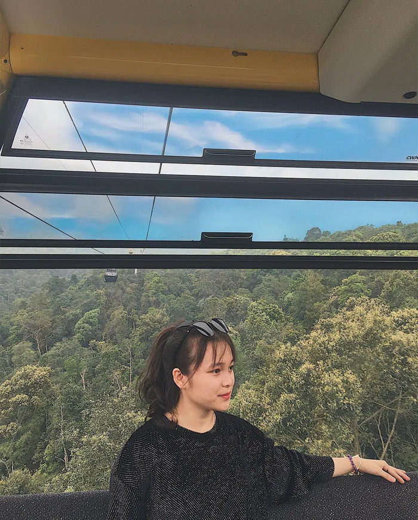
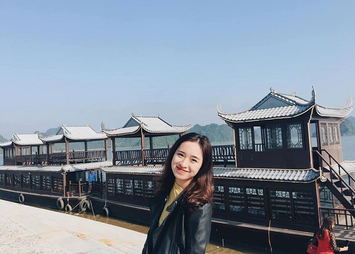

Tây Yên Tử ở đâu?
Tây Yên Tử hay có tên đầy đủ là Khu du lịch tâm linh – sinh thái Tây Yên Tử, thuộc tỉnh Bắc Giang. Đây là một quần thể công trình bao gồm các di tích lịch sử, văn hóa,
các danh lam thắng cảnh nằm ở phía tây và bắc của dãy núi Yên Tử.
Khu du lịch cách thủ đô Hà Nội khoảng 124 km, bạn có thể di chuyển bằng xe khách hoặc xe máy.
Hướng dẫn đường đi đến Tây Yên Tử
Nếu đi bằng xe máy, bạn hãy đi từ Hà Nội đến thành phố Bắc Giang, sau đó di chuyển thêm quãng đường 67 km nữa để đến tận nơi. Đi tới Big C, hãy rẽ vào đường Tâm Linh, đi tiếp đến ngã 3 sẽ có biển hướng về Tây Yên Tử, cứ đi thẳng theo đường đó đến khi gặp biển chỉ dẫn, rẽ vào đó, đi tiếp một đoạn nữa là đến nơi.
Nếu bạn đi xe khách thì còn đơn giản hơn. Từ Hà Nội bắt xe đi thành phố Bắc Giang. Từ đó đón xe buýt đi một mạch lên thẳng Tây Yên Tử. Chi phí chỉ khoảng 100.000Đ.
Khu du lịch Tây Yên Tử có gì thú vị?
Khu du lịch tâm linh – sinh thái Tây Yên Tử mới được đưa vào khai thác gần đây. Ban đầu, quần thể này được xây dựng nhằm tái hiện lại con đường phật pháp của Phật hoàng Trần Nhân Tông. Bao gồm dọc sường dãy Tây Yên Tử từ chùa Vĩnh Nghiêm – Yên Dũng qua chùa Mã Yên, đến Hòn Tháp, Hồ Bấc, chùa Am Vãi…
Tây Yên Tử có hệ thống chùa tháp trang nghiêm, di tích lịch sử giá trị, các công trình kiến trúc phức tạp, công phú. Bên cạnh đó, khu vực này còn được bao bọc trong một không gian thiên nhiên với rừng núi hùng vỹ, đẹp ngoạn mục và ấn tượng.
Tại đây cũng có tuyến cáp treo nối liền hai tỉnh Quảng Ninh – Bắc Giang, hướng đến phát triển du lịch về lâu về dài trong tương lai. Đến khu du lịch Tây Yên Tử, bạn có đi dạo vãn cảnh, check-in siêu đẹp với cảnh quan thơ mộng - nơi được tín đồ sống ảo miền Bắc gọi là “Vạn Lý Trường Thành phiên bản Việt”.
Chơi gì ở Tây Yên Tử?
Viếng thăm các ngôi chùa lớn
Khu du lịch tâm linh - sinh thái Tây Yên Tử có 3 khu vực: chùa Trung, chùa Hạ, chùa Thượng. Trong đó, khu vực chùa Hạ là trung tâm, có địa hình bằng phẳng,
hướng tầm nhìn về phía núi non trùng điệp.
Tại đây có hầu hết các dịch vụ phục vụ du khách: công viên sinh thái, khu tái hiện Hoàng thành Thăng Long, nhà hàng, bảo tang, khu nghỉ dưỡng bên suối….

Khu chùa Trung cách đó không xa, nằm giữa núi Yên Tử. Tại khu vực này có các đài vọng cảnh, đường đi bộ lên chùa, đường cáp treo… Bạn có thể dừng chân tại đây để vãn cảnh và chụp ảnh.
Khu vực chùa Thượng thì dành cho các du khách muốn thực hiện hành trình leo núi và thiền.
Tham quan các di tích
Chùa Am Vãi là một trong những di tích quan trong nhất của quần thể Tây Yên Tử. Chùa nằm trên độ cao 700 m so với mực nước biển, được xây dựng từ thế kỷ 12 - 13.
Xưa kia, chùa này là nơi các công chúa nhà Trần đến tu hành, nên còn được gọi là Am Ni Tự. Hiện nay chùa vẫn còn nhiều dấu tích xưa, như hàng Tiền, hang Gạo, giếng cổ, bàn Cờ Tiên, dấu chân Phật…
Chụp ảnh ở Cổng Trời
Cổng trời nằm ở khu vực chùa Hạ, là một phông nền sống ảo không thể bỏ qua tại Tây Yên Tử. Đây cũng chính là nơi mà ca sĩ tài năng Việt Nam – Sơn Tùng M-TP đã quay MV Lạc Trôi tram triệu view vài năm trước.
Săn mây nơi chùa Thượng
Khu vực chùa Thượng mùa nay có nhiều mây. Nếu bạn là người thích đi săn mây thì có thể đến đây. Tham quan chùa Bổ Đà và chụp ảnh với khung trời tuyệt đẹp, bạn sẽ có cảm giác như đang lạc vào chốn bồng lai tiên cảnh.
Ngồi cáp treo vãn cảnh Tây Yên Tử
Cáp treo Tây Yên Tử được xây dựng năm 2013, nhưng mới được đưa vào hoạt động từ Tết nguyên đán 2019. Tuyến cáp này giúp rút ngắn thời gian và tiết kiệm công
sức di chuyển lên đến các ngôi chùa trên núi.
Tuyến cáp có chiều dài hơn 2 km, tổng cộng có 45 cabin, vận chuyển khoảng 1.500 khách/giờ. Ngồi cáp treo, bạn có thể dễ dàng di chuyển từ Tây Yên Tử Bắc Giang
sang chùa Đồng Quảng Ninh chứ không phải đi bộ mất 3 giờ đồng hồ như trước đây.

Tham quan Khu bảo tồn thiên nhiên Tây Yên Tử
Khu bảo tồn thiên nhiên Tây Yên Tử rộng hơn 13 ha, bao gồm rừng và đất đặc dụng. Tại đây có 5 kiểu thảm thực vật chính: tràng cỏ và cây bụi; cây gỗ nhỏ và tre nứa;
rừng kín thường xanh; cây lá rộng xen cây lá kim; rừng cây gỗ lá rộng.
Đây cũng là ngôi nhà chung của nhiều loại động vật lớp thú, bò sát, ếch nhái… Người yêu thiên nhiên và thích khám phá thế giới động vật hẳn sẽ không thể bỏ qua cơ hội
tham quan Khu bảo tồn thiên nhiên Tây Yên Tử.
Kinh nghiệm du lịch Tây Yên Tử: Mùa nào đẹp nhất?
Tây Yên Tử năm trên độ cao 1000 m so với mực nước biển, được bao bọc bởi rừng núi yên tính, thời tiết bốn mùa mát mẻ, không khí trong lành. Bạn có thể ghé thăm nơi
này bất cứ khi nào, nhưng mùa xuân.
Hè là thời điểm đẹp nhất. Mùa xuân người dân và du khách đến hành hương khá đông, không khí sôi nổi khiến cho mọi vật dường như cũng có linh tính, tràn đầy sức sống.
Mùa hè vắng hơn một chút, chỉ có các nhóm bạn đến chụp ảnh sống ảo và vãn cảnh. Mỗi dịp rằm hoặc lễ lớn, Tây Yên Tử mới thu hút đông người hơn.
Giá vé tham quan tại Tây Yên Tử
Vé cáp treo Tây Yên Tử khứ hồi là 260.000Đ/khách. Vé 1 chiều: 150.000Đ/khách. Vé xe điện là 10.000Đ/khách.
Lưu ý: Đây là không gian chùa chiền nên hãy ăn mặc kín đáo khi ghé thăm. Nên mang theo mũ, nón, ô để che nắng khi đi dạo. Mang theo nước và thức ăn cũng được,
nếu không có thể mua ở khu vực nhà hàng, tất nhiên là giá sẽ cao hơn so với bên ngoài.

Tây Yên Tử trầm mặc, trang nghiêm như một bức tranh, đẫm hương khói hương và công đức. Những người yêu thích không gian yên tính có thể đến đây để dạo chơi và thư giãn.
Nếu muốn tìm một điểm dừng chân nhân dịp cuối tuần, đừng ngần ngại chọn khu du lịch tâm linh gần Hà Nội này. Tháng 3 tháng 4 đang là mùa đẹp nhất để ghé thăm, bạn hãy lên kế hoạch ngay.